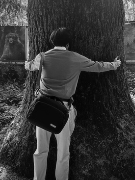

Meet Agney,
A curious engineer with a love for old machines, cars, and all things that tell stories. This
digital broadsheet showcases a mix of projects, thoughts, and tinkering logs—written not in ink,
but
in HTML. Some say he dreams in binary and wake up with interupts, which also happens to be from
his mom.
Engineer Open to work
What am I best at?
● Languages — C, python, Dart.
● Embedded Systems — ESP 32, Arduino, Raspberry Pi.
● App Dev — Flutter.
● Tools — Git, Linux CLI, Linux Sys Admin.
What is this about?
I'm not entirely sure. Anyways this website is still very much work in progress, it is a concept I
wanted to bring to life so I made it in a couple of hours. There is still a lot of ideas I want to
implement.